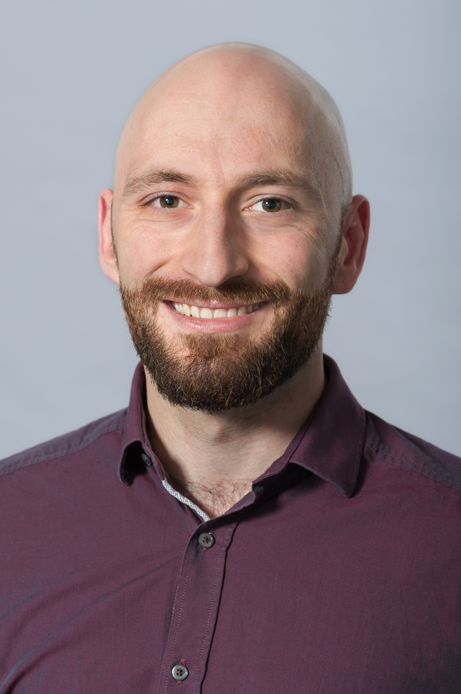

I am a mechanical engineer and roboticist. I like to build things and see how they develop---from first ideas to working prototypes.
Currently I work at fortiss and pursue a doctorate at the Technische Universität München as part of the biomimetic robotics and machine learning laboratory.
In my spare time I enjoy hiking, listening to music, reading, cooking and dancing salsa and bachata.